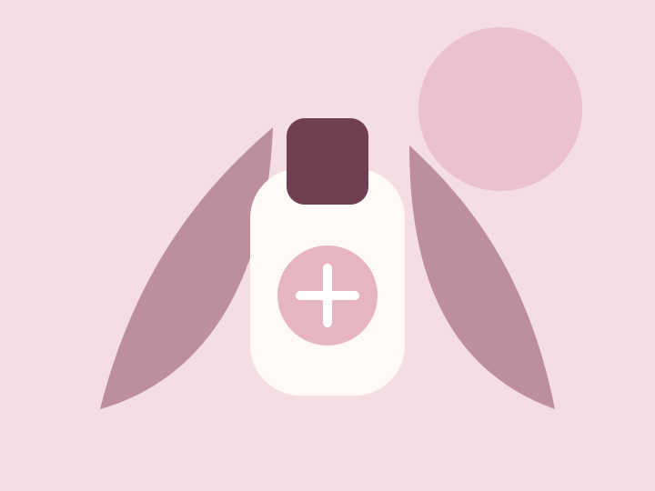

Facial treatments
Targeted cleansing and hydration for clearer, refreshed-looking skin.
View facial optionsProfessional care since 2014
Personalised facial treatments, aesthetic skincare and restorative beauty and wellness services in Johannesburg.

Welcome to Palufor Skin Clinic
Our small South African team provides clear treatment guidance and accessible care for acne, dullness, uneven texture, grooming and relaxation. Every skin consultation starts with your goals.
Targeted cleansing and hydration for clearer, refreshed-looking skin.
View facial optionsPractical professional skincare guidance built around your skin goals.
Enquire about a consultationRestorative sessions designed to support relaxation and wellbeing.
View wellness servicesTell us what you would like to improve and our team will guide your next step.